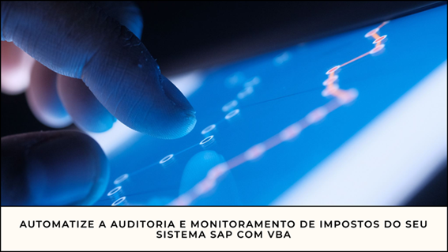

O Uso do VBA para Ajudar um Sistema SAP com Auditoria e Monitoramento de Impostos
Introdu��o
A integra��o do Visual Basic for Applications (VBA) com o SAP — uma poderosa ferramenta que permite a automação de tarefas complexas e repetitivas, melhorando a eficência operacional. O VBA, uma implementa��o do Microsoft Visual Basic 6, — uma linguagem de programa��o que pode ser usada pelo pacote Microsoft Office, enquanto o SAP — um dos sistemas de planejamento de recursos empresariais mais utilizados no mundo. Atrav�s da integra��o do VBA com o SAP, os usu�rios podem automatizar o processo de extra��o de dados do SAP para o Excel, realizar an�lises complexas e at� mesmo controlar as transa��es do SAP diretamente do Excel, tornando o trabalho di�rio mais eficiente e preciso.
Benef�cios da Integra��o VBA com SAP
- Extra��o de Dados: O VBA pode ser usado para extrair dados do SAP e import�-los para o Excel, onde podem ser manipulados e analisados.
- Automatização de Tarefas: Tarefas repetitivas ou complexas no SAP podem ser automatizadas usando VBA, como entrada de dados e execu��o de transa��es.
- Interface Personalizada: O VBA pode criar interfaces no Excel que interagem com o SAP, melhorando a experi�ncia do usu�rio.
- Valida��o de Dados: O VBA pode validar dados no Excel antes de serem carregados no SAP, garantindo precis�o e reduzindo erros.
Configura��o do Ambiente VBA
Para configurar o ambiente VBA para programa��o, siga os passos abaixo:
- Habilitar o VBA: No Microsoft Excel, v� em Arquivo > Op��es > Central de Confiabilidade > Configura��es de Macro e selecione "Habilitar todas as macros".
- Acessar o Editor VBA: Pressione
Alt + F11no Excel para abrir o Editor VBA. - Inserir um M�dulo: No Editor VBA, v� em Inserir > M�dulo para adicionar um novo m�dulo onde o c�digo ser� escrito.
- Escrever C�digo VBA: Escreva seu c�digo no m�dulo inserido.
- Executar o C�digo VBA: Ap�s escrever o c�digo, pressione
F5ou selecione Executar > Executar Sub/UserForm.
Exemplo de C�digo VBA para Conex�o com SAP
Sub ConectarSAP()
Dim SapGuiAuto As Object
Dim SAPApp As Object
Dim SAPConnection As Object
Dim SAPSession As Object
Set SapGuiAuto = GetObject("SAPGUI")
Set SAPApp = SapGuiAuto.GetScriptingEngine
Set SAPConnection = SAPApp.OpenConnection("NomeDaConexao")
Set SAPSession = SAPConnection.Children(0)
MsgBox "Conex�o com SAP estabelecida com sucesso!", vbInformation
End Sub
Automatizando Tarefas de Auditoria Fiscal
A automação de tarefas de auditoria fiscal pode ser realizada de v�rias maneiras usando o VBA e o SAP. Aqui est�o algumas ideias:
- Extra��o de Dados: Use o VBA para extrair dados fiscais do SAP, como informa��es sobre vendas, compras e impostos.
- An�lise de Dados: Analise os dados fiscais no Excel para verificar inconsist�ncias e conformidade com as leis fiscais.
- Relat�rios: Crie relat�rios personalizados no Excel para destacar problemas ou inconsist�ncias.
- Alertas: Configure alertas no VBA para notificar sobre problemas encontrados durante a an�lise.
Exemplo de C�digo VBA para Monitoramento Fiscal
Sub MonitorarConformidadeFiscal()
Dim ws As Worksheet
Dim linha As Integer
Dim taxaImposto As Double
Set ws = ThisWorkbook.Sheets("DadosFiscais")
For linha = 2 To ws.Cells(ws.Rows.Count, 1).End(xlUp).Row
taxaImposto = ws.Cells(linha, 3).Value
If taxaImposto < 0.15 Or taxaImposto > 0.25 Then
MsgBox "Inconsist�ncia na linha " & linha & ": Taxa de imposto fora do intervalo permitido.", vbExclamation
End If
Next linha
End Sub
Conclus�o
A integra��o do VBA com o SAP para auditoria e monitoramento fiscal pode ser uma ferramenta poderosa para automatizar tarefas, melhorar a eficência e garantir a conformidade. No entanto, — crucial seguir as melhores pr�ticas de codifica��o, realizar testes rigorosos, tratar dados sens�veis com cuidado e garantir a seguran�a e conformidade em todos os momentos. Com a abordagem correta, o VBA pode ser uma ferramenta valiosa para aprimorar seus processos fiscais e fornecer insights valiosos.
Nota
O Sistema SAP, cujo nome — uma sigla do termo alem�o "Systemanalysis Programmentwicklung", que significa "Desenvolvimento de Programas para An�lise de Sistema", — um dos l�deres mundiais em software de planejamento de recursos empresariais (ERP). Ele integra diversos processos de neg�cios em um �nico sistema, proporcionando uma vis�o completa das opera��es e facilitando a tomada de decis�es.
Um Sistema ERP (Enterprise Resource Planning, ou Planejamento de Recursos Empresariais em portugu�s) — um software de gest�o que integra diversos processos e recursos de uma empresa em um �nico sistema. Ele automatiza dados, fornece relat�rios em tempo real e melhora an�lises gerenciais para decis�es mais eficazes. O ERP serve para otimizar processos, integrar as diferentes �reas da empresa e centralizar todas as informa��es em um sistema �nico, onde o gestor pode acompanhar o andamento do neg�cio e tomar as decis�es mais acertadas. A ideia — que a empresa que possui um ERP consiga ter um fluxo de trabalho muito mais �gil e confi�vel.